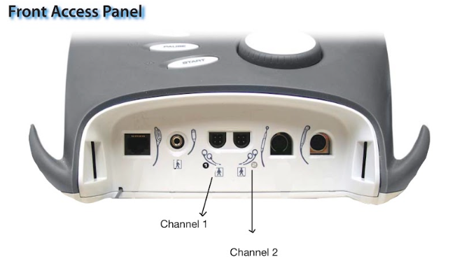

How to position electrodes in a quadripolar pattern and configure parameters for a deep tissue IFC treatment session.
This procedure is performed when a patient requires deep tissue pain relief or localized swelling reduction for large, deep structures like the lower back, quadriceps, or shoulder. Because IFC requires an internal crossing pattern to create its therapeutic effect, this task must be used exclusively when there is enough physical surface area on the skin to comfortably position a four-electrode grid.
-
Place the four electrodes on the skin surrounding the center of the pain site so they form a square or "X" pattern.
-
Plug the lead wires into the Channel 1 and Channel 2.
Note: For this example, Channel 1 and Channel 2 will be used. Any available channels can be used.

-
Connect Channel 1 leads to one diagonal pair of pads.
-
Connect Channel 2 leads to the opposite diagonal pair of pads.
-
On the display home menu, select
Electrotherapy
.
-
Then, select
Interferential
.
-
To adjust the treatment time, select
Edit
.
-
Select
Treatment Time
and use console arrow keys to achieve the desired time.
-
Press
to exit.
-
Slowly rotate the main intensity dial clockwise. Instruct the athlete to inform you when they feel a strong, comfortable "tingling."
-
Press
START
.
The countdown timer will begin ticking backward on the screen, and the patient will report a smooth, diffuse, sweeping "tingling" sensation that covers the entire square grid between the four electrodes. The patient should not experience any sharp localized stinging.